ภาควิชาคอมพิวเตอร์ศึกษา (Computer Education Scheduling System)
ยินดีต้อนรับสู่ระบบบริหารจัดการตารางเรียนออนไลน์ ระบบนี้ช่วยอำนวยความสะดวกในการวางแผนการเรียนการสอน จัดการรายชื่ออาจารย์ รายวิชา และห้องเรียน ให้เป็นระบบและตรวจสอบความถูกต้องได้ง่ายดาย
ก่อนที่จะเริ่มจัดตารางสอนได้ ท่านจำเป็นต้องเพิ่มข้อมูลพื้นฐานลงในระบบเสียก่อน โดยไปที่เมนูด้านซ้ายมือ
ไปที่เมนู "รายชื่ออาจารย์" เพื่อบันทึกข้อมูลอาจารย์ผู้สอน ท่านสามารถเพิ่มข้อมูลได้ 2 วิธี:
วิธีที่ 1: เพิ่มอาจารย์ใหม่ (ทีละรายการ)
คลิกปุ่ม "เพิ่มอาจารย์" ระบบจะแสดงหน้าต่างให้กรอกข้อมูลดังนี้: ชื่ออาจารย์, ชื่อย่ออาจารย์ (ใช้แสดงในตารางให้กระชับ), ภาระโหลดสูงสุด (ชั่วโมง), และเงื่อนไขพิเศษ
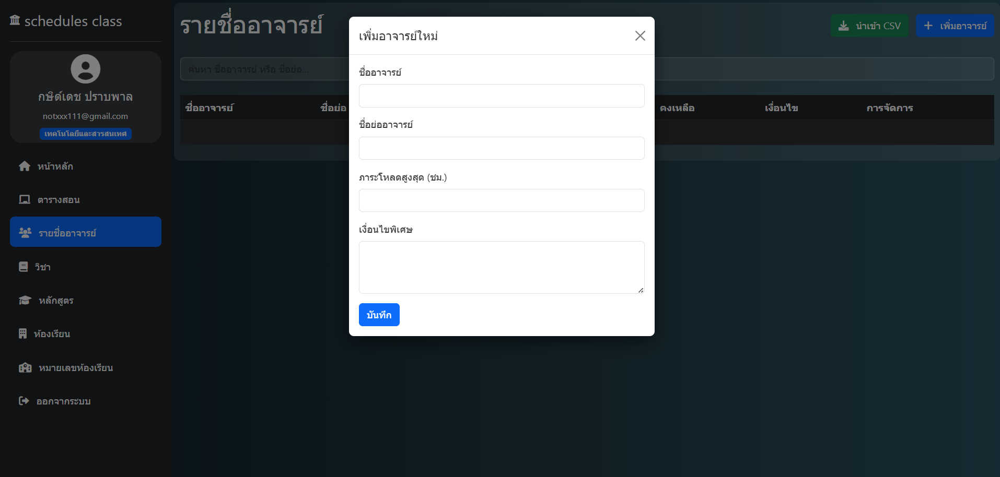
วิธีที่ 2: นำเข้าข้อมูลอาจารย์จาก CSV
หากท่านมีข้อมูลอาจารย์จำนวนมาก สามารถคลิกปุ่ม "นำเข้า CSV" โดยไฟล์ต้องมีรูปแบบคือ: ชื่อ, ชื่อย่อ, ภาระโหลด, เงื่อนไข
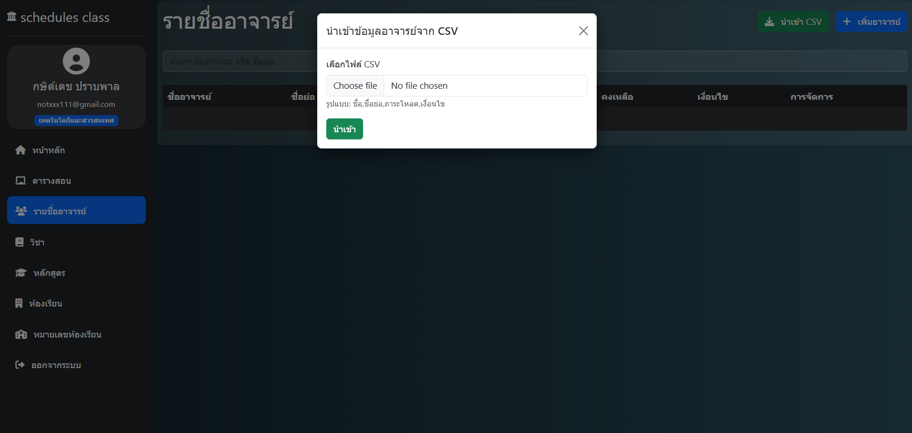
ไปที่เมนู "วิชา" เพื่อบันทึกรายวิชาที่จะเปิดสอน ท่านสามารถเพิ่มได้ 2 วิธีเช่นกัน:
วิธีที่ 1: เพิ่มวิชาใหม่
กรอกรายละเอียด ได้แก่ รหัสวิชา, ชื่อวิชา, หน่วยกิต, จำนวนชั่วโมง/สัปดาห์ และเลือกอาจารย์ผู้สอนประจำวิชานั้นๆ จากรายชื่อที่เคยบันทึกไว้
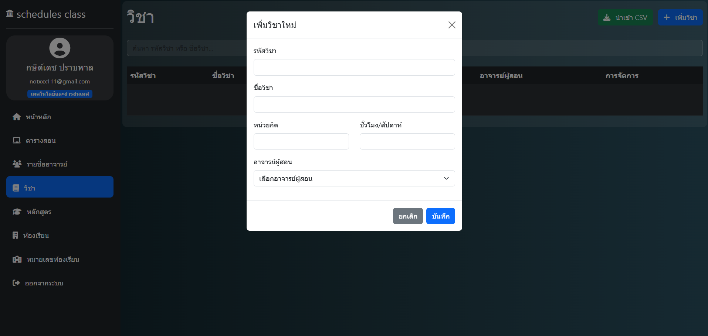
วิธีที่ 2: นำเข้าข้อมูลวิชา (CSV)
อัปโหลดไฟล์ CSV ตามรูปแบบที่ระบบกำหนดคือ: รหัสวิชา, ชื่อวิชา, หน่วยกิต, ชั่วโมงเรียน (ตัวอย่าง: CS101, โปรแกรมเบื้องต้น, 3, 4)
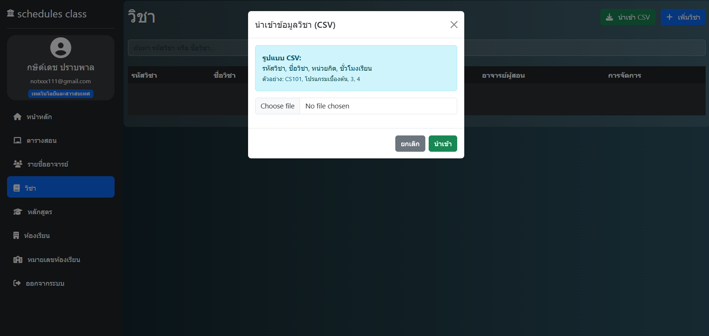
ไปที่เมนู "ห้องเรียน" ใช้สำหรับระบุ "กลุ่มนักศึกษา" ที่เรียนด้วยกัน เช่น CED-DE-RA, TCT-DE-RB
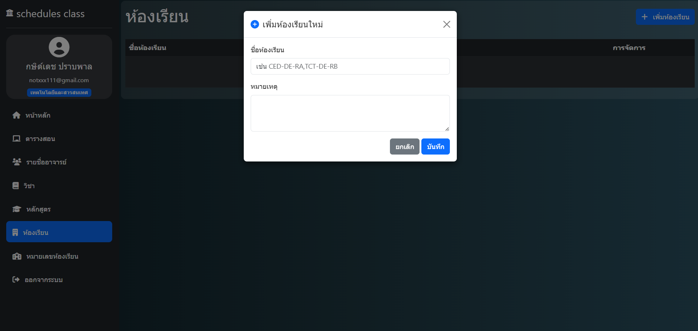
กรอกชื่อห้องเรียน (กลุ่มเรียน) และสามารถใส่หมายเหตุเพิ่มเติมได้หากต้องการ จากนั้นกด "บันทึก"
ไปที่เมนู "หมายเลขห้องเรียน" ใช้สำหรับระบุสถานที่เรียนหรือห้องปฏิบัติการจริง เช่น ห้อง 1101, 2205
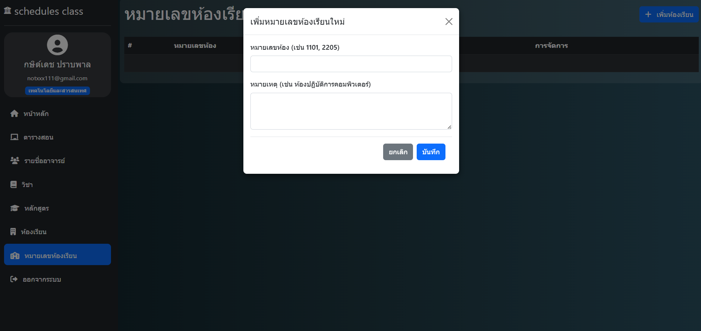
ระบุหมายเลขห้อง และสามารถใส่หมายเหตุเพื่อระบุประเภทห้อง (เช่น ห้องปฏิบัติการคอมพิวเตอร์) เพื่อป้องกันความสับสน
เมื่อเตรียมข้อมูลพื้นฐานครบแล้ว ให้นำข้อมูลเหล่านั้นมาจัดกลุ่มเข้าด้วยกันในเมนู "หลักสูตร" ว่าในเทอมนั้นๆ มีวิชาอะไรสอนให้กลุ่มไหนบ้าง
กดปุ่ม "เพิ่มหลักสูตร" และระบุข้อมูล: ชื่อหลักสูตร (เช่น CED, TCT, TCT-RA), ภาคเรียน (เช่น 1, 2 หรือ 3), และ ปีการศึกษา (พ.ศ.) (เช่น 2569)
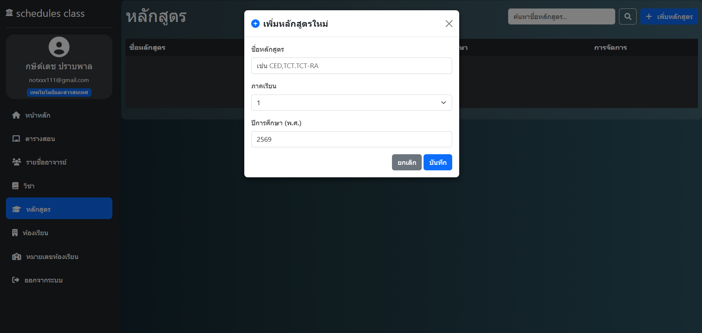
หลังจากสร้างหัวข้อหลักสูตรเสร็จแล้ว ให้คลิกจัดการหลักสูตรนั้น เพื่อเพิ่มวิชาที่เปิดสอน โดยระบบจะให้ท่านเลือก: วิชา (จาก Dropdown), ห้องเรียน (กลุ่มเรียน), หน่วยกิต, ชั่วโมง/สัปดาห์ และกำหนด อาจารย์ผู้สอน อีกครั้ง
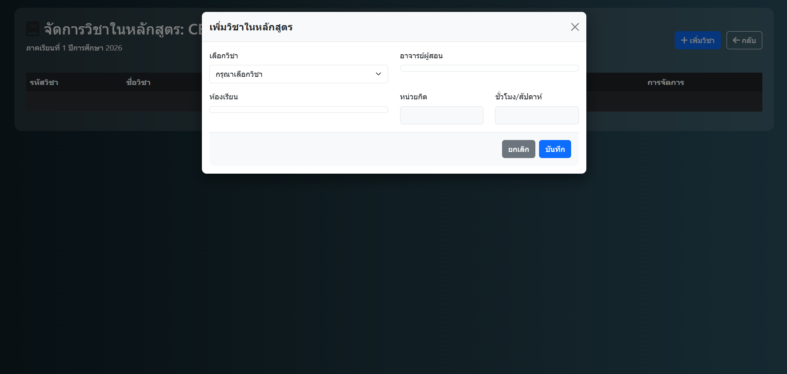
เมื่อเพิ่มวิชาในหลักสูตรครบถ้วนแล้ว ข้อมูลเหล่านี้จะไปปรากฏเป็นบล็อกรายวิชาที่หน้าต่าง "ตารางสอน" เพื่อให้ท่านลากลงเวลาเรียนต่อไป
เมื่อเข้าสู่ระบบ (หรือเมื่อเตรียมข้อมูลเสร็จแล้ว) หน้าหลักสำหรับการทำงานคือหน้า "ตารางสอน" ซึ่งเป็นหน้าจอหลักสำหรับดูภาพรวมและจัดการตารางเรียน
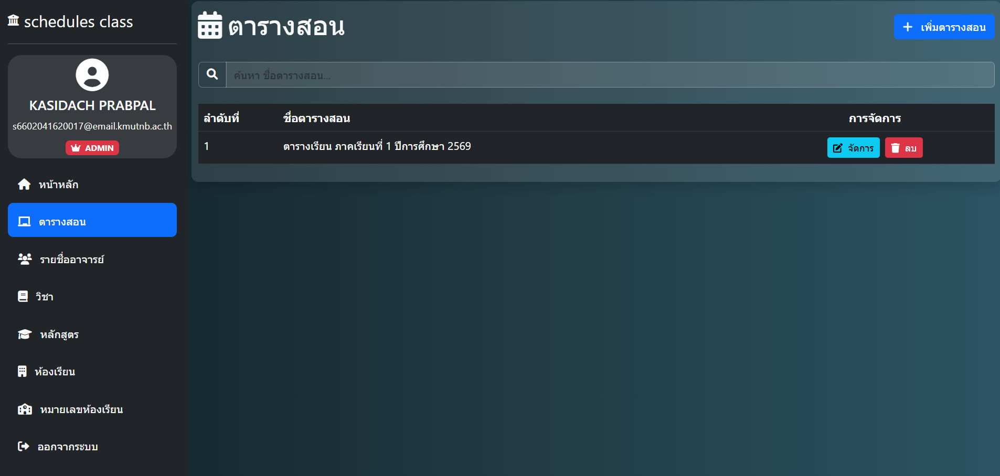
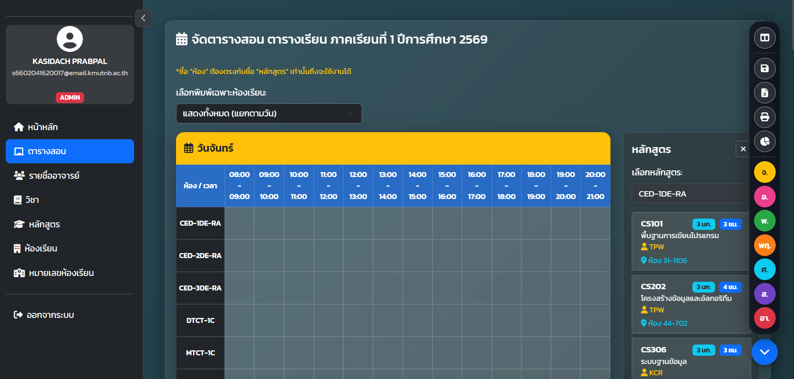
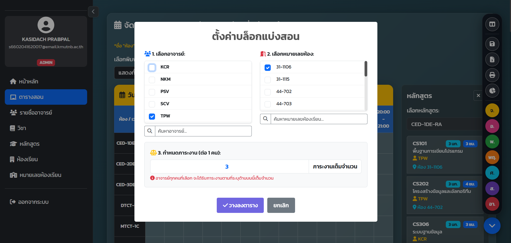
เมื่อท่านลากกล่องวิชามาวางในช่องเวลาบนตาราง ระบบจะแสดงหน้าต่าง "ตั้งค่าบล็อกแบ่งสอน" เพื่อให้ท่านยืนยันและระบุรายละเอียดเพิ่มเติม ดังนี้:
ส่วนนี้สำหรับผู้ที่มีสิทธิ์ระดับ Admin เท่านั้น เพื่อดูแลความเรียบร้อยของสมาชิกในระบบผ่านเมนู "จัดการผู้ใช้งาน"
หากพบปัญหาการใช้งาน กรุณาติดต่อผู้ดูแลระบบภาควิชาคอมพิวเตอร์ศึกษา
พัฒนาระบบและจัดทำคู่มือโดย:
นายกษิด์เดช ปราบพาล | นายบรรณวัชร บำรุง